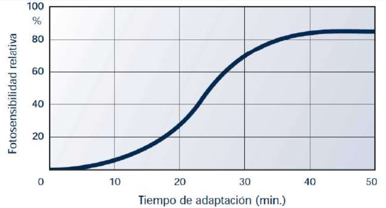
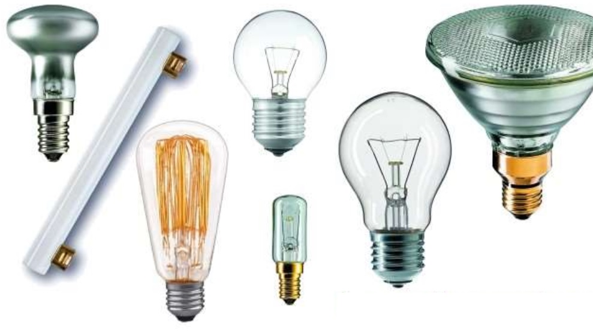
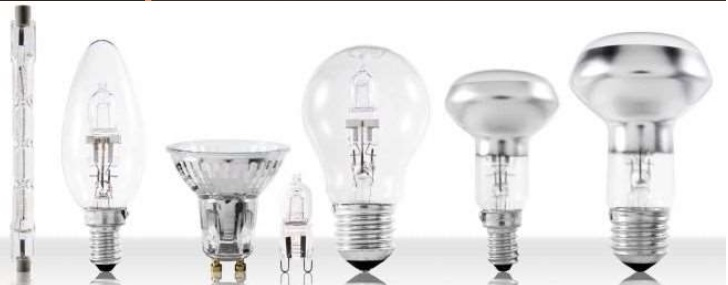
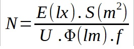
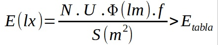

Luminotecnia
Ciencia aplicada que concierne a la luz, su control y manipulación, se ocupa principalmente de los elementos físicos que producen energía lumínica como lámparas y luminarias.
Conceptos previos
Luz
La luz es la energía electromagnética visible por el ojo humano en un rango de longitud de onda entre 0,38 y 0,78 micrómetros.
Las fuentes de luz suelen ser superficies a altas temperaturas como el sol a una temperatura de 5500K (5227°C), filamentos de lámparas a 3300K (3027°C), las cuales emiten un espectro continúo de longitudes de onda.
Todos los cuerpos a una temperatura mayor a la del cero absoluto (-273°C), emite radiación en un amplio campo de longitudes de onda, llamándose “Radiación incandescente” o “Radiación de temperatura”
Fuentes de luz artificial incandescente:
- Llama de combustión.
- Metal al rojo vivo.
- Filamento de una lámpara.
| Ambiente | Temperatura (K) |
|---|---|
| Cielo azul | 10000 - 30000 |
| Cielo nublado | 7000 |
| Luz solar al mediodía | 5200 |
| Luna | 4100 |
| Lámparas fluorescentes: | |
| Luz día | 6500 |
| Blanco neutro | 4000 |
| Blanco cálido | 3000 |
| Blanco cálido de lujo | 2700 |
| Lámparas incandescentes: | |
| Luz día 500W | 4000 |
| Standard | 2700 - 3200 |
| Luz de vela | 1800 |
La luz monocromática es aquella que posee una única longitud de onda en su composición, por lo cual su espectro es discontinuo
Magnitudes de la luz
Índice de rendimiento de color (Rg)
Este índice nos permite conocer la similitud del espectro de una fuente de luz discontinua con la luz solar.
- Para Rg = 1, la luz es similar a la luz natural lo poseen las lámparas incandescentes.
- Rg = 0, luz monocromática, como las lámparas de sodio.
- Las luces fluorescentes tienen un Rg entre 0,7 y 0,9.
Flujo luminoso (lm)
Es la cantidad de luz emitida o radiada, en un segundo, en todas las direcciones. Mide la energía global emitida por una fuente luminosa. Su magnitud es el lumen (lm).
| Lámpara | Flujo luminoso (lm) |
|---|---|
| Lámpara incandescente 100W | 1380lm |
| Lámpara fluoescente 36W | 3250lm |
| Lámpara de mercurio de alta presión 400W | 22000lm |
| Lámpara de luz mezcla 250W | 5600lm |
| Lámpara de sodio a baja presión 35W | 4800lm |
| Lámpara de sodio a alta presión 400W | 47000lm |
| Lámpara halogenuro metálico de 250W | 17000lm |
Intensidad (I)
Es la cantidad de luz emitida en un segundo y en una determinada dirección, su magnitud es la candela (Cd), una candela se asemeja a la intensidad emitida por una vela.
Técnicamente una candela se define como la 1/60 parte de la intensidad luminosa de un cuerpo negro a la temperatura de solidificación del platino (2042K) por cm2.
Una lámpara incandescente de 100w, tiene una luminosidad o intensidad luminosa de unas 130 candelas.
Iluminancia o nivel de iluminación
Es una característica del objeto iluminado, indica la cantidad de luz que incide sobre su superficie.
Se representa por la letra E, siendo su unidad el lux (lx).
| Noche sin luz | 0,01lx |
| Noche con luna llena | 0,2lx |
| Noche con alumbrado público en las calles | 5 - 20lx |
| Oficina con buena iluminación | 500lx |
| Aparador bien iluminado | 3000lx |
| Día claro con cielo nebuloso | 20000lx |
| Exteriores | |
|---|---|
| Calle en zona residencial | 4 - 7lx |
| Avenida comercial importante | 15 - 20lx |
| Plazas | 10 - 20lx |
| Playas de estacionamiento | 50lx |
| Interiores: Residencial | |
| Iluminación general | 100lx |
| Iluminación localizada | 200lx |
| Lectura, escritura | 400lx |
| Dormitorio | 200lx |
| Cocina (general) | 200lx |
| Cocina (mesada) | 500 - 800lx |
| Baño (general) | 100lx |
| Baño (espejo) | 200lx |
| Interior: Oficinas | |
| Halls y lobbys | 200lx |
| Circulaciones | 200lx |
| Salas de reuniones | 300lx |
| Trabajo normal de oficina | 500lx |
| Interior: varios | |
| Restaurante íntimo | 80 - 100lx |
| Restaurante tipo grill | 300lx |
Eficiencia luminosa
Es la relación entre el flujo luminoso expresado en lúmenes y la potencia de la lámpara o fuente.
| Tipo de lámpara | Potencia | Rendimiento luminoso |
|---|---|---|
| W | lm/W | |
| Incandescente común 40W/220V | 40 | 11 |
| Fluorescente L 40W/20 | 40 | 80 |
| Mercurio de alta presión 400W | 400 | 58 |
| Halogenuros metálicos 400W | 360 | 78 |
| Sodio a alta presión 400W | 400 | 120 |
| Sodio a baja presión 180W | 180 | 183 |
Curva de sensibilidad del ojo
Las radiaciones de longitud de onda comprendidas entre los 380 nm y 780nm son captadas por el ojo humano como luz visible.
Mediante la curva de sensibilidad se observa que para la luz blanca del día, la máxima sensibilidad del ojo corresponde a la longitud de onda de 555nm (color amarillo) y la mínima sensibilidad corresponde a los colores rojo y violeta. Es por ello que las fuentes luminosas cuyas longitudes de onda corresponden al amarillo-verde son las que tienen más eficacia aunque es la de peor calidad (estamos acostumbrados a la luz blanca del sol).
Para el caso de la luz nocturna, el máximo de sensibilidad se desplaza hacia longitudes de onda menores y por consiguiente, las radiaciones de menor longitud de onda (azul-violeta) producen mayor intensidad de sensación con baja iluminación.
Enfoque
Es la capacidad que tiene el ojo para ajustarse a las diferentes distancias que existen entre los objetos y obtener imágenes nítidas.
Contraste
Permite diferenciar dos objetos contiguos por diferencias notables de color.
Adaptación
Es la capacidad que tiene el ojo para ajustarse a las diferentes iluminaciones de los objetos de manera automática mediante el ajuste de la pupila.

El tiempo de adaptación al pasar de un ambiente oscuro a uno iluminado es relativamente corto de aproximadamente unos segundos, en cambio, para pasar de un ambiente claro a uno oscuro, el tiempo ronda entre los 30 - 40 minutos.
Deslumbramiento
Es un fenómeno que produce molestia o disminución de la capacidad para distinguir objetos, debido a luz que incide directamente en el campo visual.
Calculo de iluminación de interiores
En la iluminación de un espacio debe buscarse que la misma sea uniforme y que el tipo de lámparas utilizados sea el adecuado, una vez hecho esto se debe conocer la cantidad necesaria de los mismos.
Para el calculo de iluminación existen 2 métodos utilizados generalmente.
- Método de los Lúmenes o Método del factor de utilización: siendo un método practico y sencillo.
- Método del punto por punto o de Iluminarias puntuales: utilizado para puntos concretos.
Patrones de distribución:
- General.
- General localizado.
- Localizado.
Método del Lumen
Diagrama de Flujo
Ecuación utilizada para el calculo
Datos de entrada
- Dimensiones del local y la altura del plano de trabajo, normalmente de 0,85m.
- Dimensiones del local.
- Altura del plano de trabajo.
- Nivel de iluminancia media.
- Elección del tipo de lampara.
- Elección del tipo de luminaria en catálogos y su altura de suspensión.
Tabla de iluminancia media
Tipos de luminarias
Incandescentes
La luz se produce por el paso de corriente eléctrica a travéz de un filamento metálico
Son las de mayor consumo eléctrico, baratas y de menor duración.
Solo aprovechan el 5% de la energía eléctrica en la emisión de luz, el resto se transforma en calor.

Halógenas
Utilizan un compuesto que libera un gas de un elemento halógeno en un sistema incandescente, consiguiendo así establecer un ciclo de regeneración.
Poseen mayor duración.

Fluorescentes
Esta construido de un tubo de vidrio que contiene una pequeña cantidad de mercurio y gas argón.
Al aplicar una diferencia de potencial entre los dos electrodos situados a ambos lados del tubo, se produce una descarga ctrica, al pasar por el vapor de mercurio, este emite radiación ultravioleta, la cual es absorbida por la sustancia fluorescente que recubre el interior del tubo, emitiendo radiación visible.
La eficiencia en contraposición de las lamparas incandescentes es mayor y produce un menor calentamiento, consumen 80% menos de energía y duran entre 8 y 10 veces mas.
Bajo consumo
Son lamparas fluorescentes compactas, se han ido adaptando al tamaño, formas y soportes de las bombillas convencionales.
LED (Light Emitting Diode)
Utiliza un diodo que al polarizarse emite luz, el aprovechamiento energético es del 90%.
| Ámbito de uso | Tipos de lámparas más utilizados |
|---|---|
| Doméstico | Incandescente |
| Fluorescente | |
| Halógenas de baja potencia | |
| Fluorescentes compactas | |
| Oficinas | Alumbrado general: fluorescentes |
| Alumbrado localizado incandescentes y halógenas de baja tensión | |
| Comercial | Incandescentes |
| Halógenas | |
| Fluorescentes | |
| Grandes superficies con techos altos, mercurio a añta presión | |
| Industrial | Todos los tipos |
| Luminarias situadas a baja altura (< 6m): fluorescentes | |
| Luminarias situadas a gran altura (> 6m): lámparas de descarga a alta presión montadas en proyectores | |
| Alumbrado localizado: incandescentes | |
| Deportivo | Luminarias situadas a baja altura: fluorescentes |
| Luminarias situadas a gran altura: lámparas de vapor de mercurio a alta presión, halogenuros metálicos y vapor de sodio a alta presión |
Sistemas de alumbrado
Dentro de los sistemas de alumbrado podemos encontrar a la iluminación directa como indirecta, las dos se fundamentan en como la luz llega desde la fuente hasta el objeto.
Determinar la altura de suspensión de las luminarias
- h: altura entre el plano de trabajo y las luminarias
- h': altura del local
- d: altura del plano de trabajo al techo
- d': altura entre el plano de trabajo y las luminarias
Calculo del índice del local (k)

Elección del coeficiente de reflexión
| Color | Factor de reflexión | |
|---|---|---|
| Techo | Blanco o muy claro | 0,7 |
| Claro | 0,5 | |
| Medio | 0,3 | |
| Paredes | Claro | 0,5 |
| Medio | 0,3 | |
| Oscuro | 0,1 | |
| Suelo | Claro | 0,3 |
| Oscuro | 0,1 |
Poder reflectante de algunos colores y materiales
Factor de utilización
Factor de mantenimiento (f)
Este coeficiente dependerá del grado de suciedad ambiental y de la frecuencia de la limpieza del local
| Ambiente | Factor de mantenimiento (f) |
|---|---|
| Limpio | 0,8 |
| Sucio | 0,6 |
Factor de depreciación
Calculo del número de luminarias
Despejando la igualdad que se tenia primeramente obtenemos que:

Emplazamiento de las luminarias
Una vez obtenido el número mínimo de lámparas y luminarias se procede a calcular la distribución sobre la planta del local.
La distancia máxima de separación entre las luminarias dependerá del angulo de apertura del haz de luz y de la altura de las luminarias sobre el plano de trabajo.
| Tipo de luminaria | Altura del local | Distancia máxima entre luminarias |
|---|---|---|
| Intensiva | > 10m | e <= 1,2m |
| Extensiva | 6 - 10m | e <= 1,5m |
| Semiextensiva | 4 - 6m | |
| Extensiva | <= 4m | e <= 1,6m |
| *distancia pared-luminaria: e/2 | ||
Comprobar los resultados
Lo ultimo que se debe hacer es comprobar la viabilidad de los resultados obtenidos, revisando si la iluminancia media obtenida en la instalación diseñada es igual o superior a la recomendada en tablas.

En cuyo caso, diese menor, se debe buscar una lampara con mayor flujo luminoso, que posea mejor rendimiento luminoso,, esto generara un uso eficiente de la energía y reducirá la cantidad de elementos a utilizar